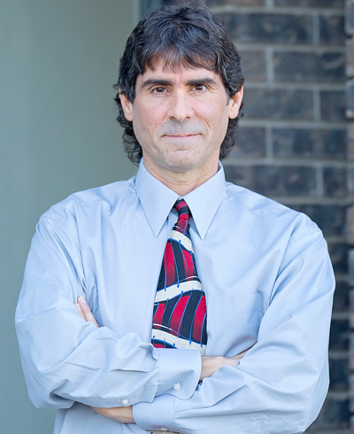

Personal injury
More than 20 years helping clients through automobile accidents, negligence claims, and the insurance process.
An experienced local attorney with a personal approach to counsel, communication, and problem-solving.

Vincent P. D’Angelo was born and raised in Wilmington, Delaware. He graduated from the University of Delaware and Widener University School of Law before moving to Northern California.
As a student of Thoroughbred pedigrees, Vincent landed a job in Northern California right out of law school, working for a consulting firm that served breeders in the United States and abroad.
After relocating, Vincent passed the California Bar and was licensed to practice law in December 2001. He opened his Tracy practice in February 2002 and has served clients across San Joaquin County and surrounding communities ever since.
Vincent’s practice centers on personal injury, estate planning and probate, and Social Security disability claims. He also assists clients with general practice and problem-solving matters.
More than 20 years helping clients through automobile accidents, negligence claims, and the insurance process.
Experience with initial applications, reconsideration, and hearings before administrative law judges.
Living trusts, plan revisions, special needs planning, and trust administration for local families.
Probate petitions and related matters in San Joaquin County and several surrounding counties.
Outside the law, Vincent is an avid outdoorsman who spends as much time as possible in Yosemite National Park. He is also a lifelong fan of Thoroughbred horse racing.
Tell Vincent what is happening and get a clearer sense of what comes next.